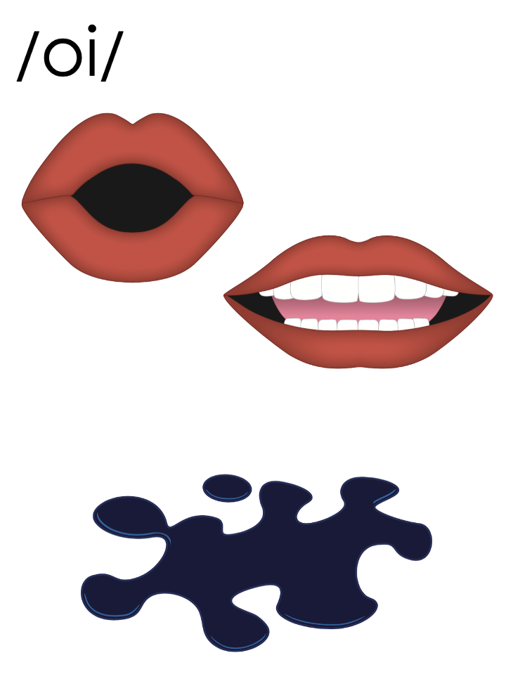

Lesson 95
oi, oy /oi/

ufliteracy.org


Lesson 95
oi, oy /oi/


See UFLI Foundations lesson plan Step 1 for phonemic awareness activity.


See UFLI Foundations lesson plan Step 2 for student phoneme responses.


ea
a
aw
au
augh
ew
ui
ue
oo
u
igh
oa
ow
oe
ee
ai
ay
ir
ur
er


See UFLI Foundations lesson plan Step 3 for auditory drill activity.

No slides needed for auditory drill.


See UFLI Foundations lesson plan Step 4 for blending drill word chain and grid.
Visit ufliteracy.org to access the Blending Board app.


See UFLI Foundations lesson plan Step 5 for recommended teacher language and activities to introduce the new concept.
oi

beginning
middle
end
point
coin
oi
beginning
middle
end
oil
oi
oy
beginning
middle
end
boy
toy
oy
oi
oy

Handwriting paper for letter formation practice. Use as needed.
See UFLI Foundations manual for more information about letter formation.

voice
toy
boyhood

point
soil
noise
join
spoil
choice
boy
toys
enjoy

See UFLI Foundations lesson plan Step 5 for words to spell.
Handwriting paper to model spelling.

See UFLI Foundations lesson plan Step 5 for words to spell.
Handwriting paper for guided spelling practice.


Insert brief reinforcement activity and/or transition to next part of reading block.

Lesson 95
oi, oy /oi/

New Concept Review

See UFLI Foundations lesson plan Step 5 for recommended teacher language and activities to review the new concept.
oi
beginning
middle
end
point
coin
oi
beginning
middle
end
oil
oi
oy
beginning
middle
end
boy
toy
oy
oi
oy
coin
point
boys
toy


See UFLI Foundations lesson plan Step 6 for word work activity.
Visit ufliteracy.org to access the Word Work Mat apps.


See UFLI Foundations lesson plan Step 7 for irregular word activities.
The white rectangle under each word may be used in editing mode. Cover the heart and square icons then reveal them one at a time during instruction.

See UFLI Foundations manual for more information about reviewing irregular words.

hour
Lesson 93-95
H is silent.
OU /ow/ has not been introduced yet.R represents the /ə/
The white rectangle under the word may be used in editing mode. Cover the heart and square icons then reveal them one at a time during instruction.
minute
Lesson 93+
U represents the /ə/ or /ĭ/ sound depending on stress.
The final E is silent but does not follow the long vowel VCe pattern.
The white rectangle under the word may be used in editing mode. Cover the heart and square icons then reveal them one at a time during instruction.
Monday
Lesson 94+
O represents the /ŭ/ sound.
Depending on dialect, AY may be pronounced /ē/.
The white rectangle under the word may be used in editing mode. Cover the heart and square icons then reveal them one at a time during instruction.
Wednesday
Lesson 94+
D is silent.
E is silent.
Depending on dialect, AY may be pronounced /ē/.
The white rectangle under the word may be used in editing mode. Cover the heart and square icons then reveal them one at a time during instruction.
Handwriting paper for irregular word spelling practice. Use as needed.
See UFLI Foundations manual for more information about reviewing irregular words.
Teach
The orange star indicates these are new irregular words that need to be introduced.
See UFLI Foundations manual for more information about teaching irregular words.
February
Lesson 95+
AR represents the /air/ sound.
In some dialects, the R is silent, and U may be pronounced /yū/ or /ŭ/
The white rectangle under the word may be used in editing mode. Cover the heart and square icons then reveal them one at a time during instruction.

Handwriting paper for irregular word spelling practice. Use as needed.
See UFLI Foundations manual for more information about teaching irregular words.


See UFLI Foundations lesson plan Step 8 for connected text activities.
I hope the fruit does not spoil.
I will join the hockey team in February.
Does Joy’s plant need moist soil to live?
See UFLI Foundations lesson plan Step 8 for sentences to write.

The UFLI Foundations decodable text is provided here. See UFLI Foundations decodable text guide for additional text options.
The Right Choice
In February, Boyd and James had a choice to make. Their mother said they could get a new pet, but they had to agree on which pet to get. As the boys entered the pet store, their mother’s voice rang in their heads. “Boys, you need to pick a pet that is cute, sweet, and spirited.”
The boys looked at all the choices of pets. Boyd saw a small kitten. “This kitten is cute,” said Boyd. James pointed to a
cute puppy. “This puppy looks sweet,” said James.
Crash! Just then, the boys heard a big noise. They turned to see a bin of dog toys spilled on the floor. Right in the middle of this mess was a tiny yellow bird. The bird must have gotten free
from its cage and flew into the bin.
When the yellow bird saw the boys, she joined them and sat in Boyd’s hands. “I think we have our new pet,” Boyd said.
“Yes, she is cute, sweet, and spirited,” said James. “And she made the choice for us!”

Insert brief reinforcement activity and/or transition to next part of reading block.